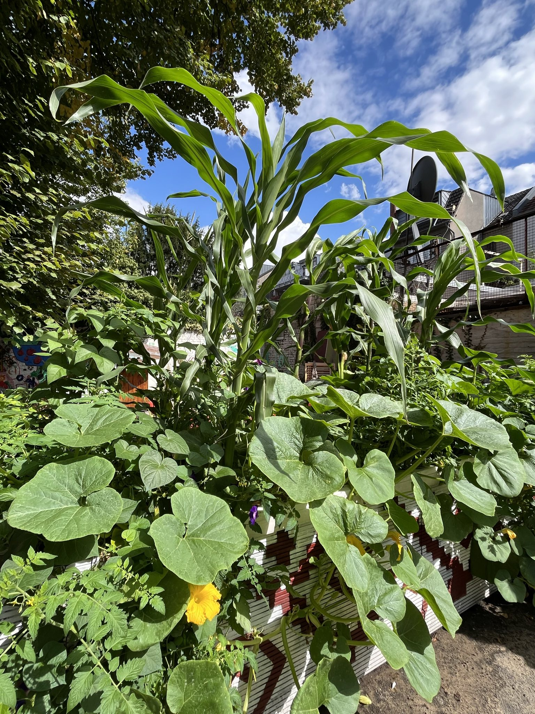

Diese Seite dient als Prototyp für ein Online-Projekt des Kollektivs Tonalli und zeigt einige Standorte auf einer Karte, an denen unsere Partner in Deutschland eine Milpa angelegt haben. Diese Orte bieten Treffpunkte, an denen es möglich ist, von dieser alten mesoamerikanischen landwirtschaftlichen Tradition zu lernen, sowie Samen und Wissen über den Anbau von Mais, Bohnen, Kürbis, Chili, Tomatillos und anderen Milpa-Pflanzen auf europäischem Boden auszutauschen.
Diese Seite dient als Prototyp für ein Online-Projekt des Kollektivs Tonalli und zeigt einige Standorte auf einer Karte, an denen unsere Partner in Deutschland eine Milpa angelegt haben. Diese Orte bieten Treffpunkte, an denen es möglich ist, von dieser alten mesoamerikanischen landwirtschaftlichen Tradition zu lernen, sowie Samen und Wissen über den Anbau von Mais, Bohnen, Kürbis, Chili, Tomatillos und anderen Milpa-Pflanzen auf europäischem Boden auszutauschen.
Der Mais wurde erstmals in Mexiko, in der Nähe von der Stadt Tehuacán im Bundesstaat Puebla, vor fast 9000 Jahren gesät. Er wurde aus einem Wildgras namens Teocintle entwickelt, und für die indigenen Völker Mesoamerikas hatte er eine mythologische Bedeutung. Für sie wurde der Mensch laut Überlieferung von den Göttern aus Mais geformt und war somit eng mit der Erde und ihren Erträgen verbunden. Die Milpa wurde als bevorzugtes landwirtschaftliches System von der Olmeca-, Maya- und Mexica-Kulturen entwickelt und über Jahrtausende auf dem gesamten amerikanischen Kontinent weitergegeben. Als die Spanier zum ersten Mal in Amerika landeten war die Milpa bereits weit verbreitet, von Argentinien bis Kanada. In dieser Zeit gelangte der Mais nach Südeuropa, insbesondere in die Mittelmeerländer, und verbreitete sich von dort aus langsam, aber stetig nach Norden, Süden und Osten. Heutzutage ist der Mais in europäischen, afrikanischen und asiatischen Kulturen fest verwurzelt und stellt ein wichtiges Nahrungsmittel dar. Oft wird er jedoch vor allem für die Tierfütterung genutzt und dient zudem als Grundlage für Biogas, biologisch abbaubaren Kunststoff und andere industrielle Produkte.
Trotzdem galt Mais in Europa historisch als minderwertiges Lebensmittel im Vergleich zu einheimischem Getreide wie Weizen und Roggen. Als der Mais aus seiner Ursprungsland, und in die Welt zu Anfang der Globalisierung transplantiert wurde, verlor er seinen mesoamerikanischen kulturellen Kontext. Dort wird er vor dem Verzehr traditionell in einer Brühe aus Wasser und Kalk gekocht. Dieser Prozess heißt Nixtamalisation, und ohne ihn, kann der Verzehr von Mais gesundheitsschädlich sein und eine Krankheit namens Pellagra verursachen. Eine Reihe von Hungersnöten und Epidemien in Südeuropa zwischen dem 16. und 19. Jahrhundert trug zu dem bis heute bestehenden Vorurteil gegenüber Mais bei.
Da der Anbau und die Nutzung von Mais in der globalisierten Welt heute weit von den tief verwurzelten und nachhaltigen Traditionen des amerikanischen Kontinents entfernt sind, hat sich das Projekt Maíz zum Ziel gesetzt, Online-Werkzeuge und Plattformen zu schaffen, die es Nutzer*innen ermöglichen, tiefer in das Thema Mais und Milpa einzutauchen, sich mit anderen Menschen in ihrer Nähe zu vernetzen und mehr über diese faszinierende Anbaumethode zu lernen.
